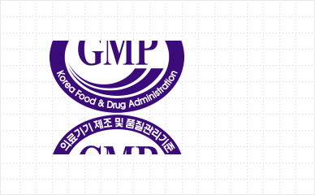

@@include('../../html/include/component/header.html')
인증
슬로건 정리 필요
질병을 예측하고 진단하며, 맞춤 치료의 방안을 제시합니다.
@@include('../../html/include/common/breadcrumb-white-depth3.html', {
"depth1": "MACROGEN",
"depth2": "회사소개",
"depth3": "인증",
})
품질경영시스템
ISO 9001
마크로젠 본사 및 소마젠(미주법인)은 고객이 만족하고 신뢰할 수 있는 서비스를 제공하기 위해 영국표준협회(BSI)로부터 ISO 9001
인증을 획득하여 관리·운영을 하고 있습니다. 전사적인 품질 보장 방침 및 목표, 업무 프로세스 상세 규정을 수립함으로써 경영 효율성을 제고함과 동시에 원가절감,
이익개선, 경쟁력 향상 등 긍정적인 성과를 내고 있습니다.

임상진단 품질경영시스템
GMP 인정
마크로젠은 2019년 2월 식품의약품안전처로부터 NGS 기반 체외진단 시약 GMP 인정을 획득했습니다. 이를 통해 체외진단 시약 제조기술의 안전성과 유효성을 검증 받아 자체 개발한 임상 진단 시약을 직접 시장에 출시 및 판매할 수 있습니다.

GMP 인정
마크로젠은 2019년 2월 식품의약품안전처로부터 NGS 기반 체외진단 시약 GMP 인정을 획득했습니다. 이를 통해 체외진단 시약 제조기술의 안전성과 유효성을 검증 받아 자체 개발한 임상 진단 시약을 직접 시장에 출시 및 판매할 수 있습니다.